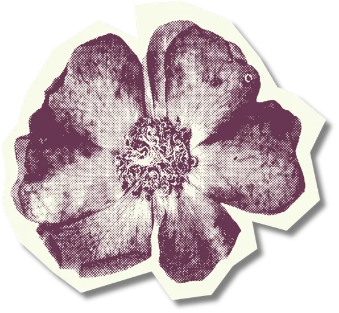

Para algo rápido o una pregunta puntual.
Empecemos a conversar
Hay dos caminos. Si tienes un proyecto, cuéntamelo en ALMA, mi app de brief. Si es algo rápido, escríbeme directo por donde prefieras.


ALMA
¿Tienes un proyecto? Cuéntamelo en ALMA
ALMA es mi app de brief. Te hace las preguntas necesarias para contarme tu proyecto, tus referentes y lo que esperas, a tu ritmo.
- 01Respondes el brief cuando quieras.
- 02Lo leo con calma y habito tu idea.
- 03Te escribo para conversar.

Preguntas frecuentes
¿Cómo es el proceso de trabajo?
Son tres momentos. Habito: conversamos y conozco tu tema, tu lugar y a tu gente. Conceptualizo: te presento un concepto con referentes y moodboard. Materializo: cuando estamos de acuerdo, desarrollo las piezas en cada medio, con rondas de ajustes.
¿Con quién trabajas?
Con artistas, marcas y colectivos culturales que tienen algo propio que contar: música, moda, arte, cultura y proyectos rurales o de barrio.
¿Qué es ALMA?
Es mi app de brief. Te guía con preguntas para que me cuentes tu proyecto, tus referentes y lo que esperas. Así llegamos a la primera conversación con todo más claro.
¿Trabajas con personas fuera de Pereira?
Sí. Gran parte del proceso es digital, así que puedo acompañar proyectos de cualquier ciudad. Las sesiones de fotos y los rodajes presenciales se coordinan según la ubicación.
¿Qué necesito tener listo para empezar?
Una idea y ganas de contarla. El brief en ALMA te guía para ordenarla; si tienes referencias, fotos o textos, ayudan mucho, y si no, los construimos en el proceso.